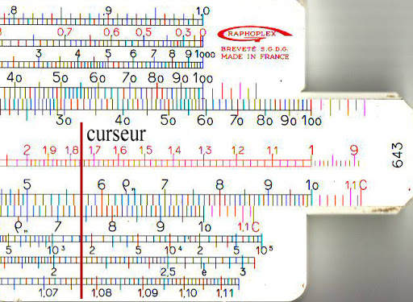

- 1632, la règles à calculer pour faire des logarithme.
- 1645, première machine à calculer. Inventé par Blaise Pascal. "La Pascaline"
- 1703, Liebniz crée l'arithmétique binaire composé uniquement de 0 et de 1
- 1847, Georges Boules crée l'algèbre de Boole composé de A et de B
- 1920, Léonardo Torres Quevedo crée "L'Arithmomètre" qui est la première machine à calculer commercialisé dans le monde.
- 1936, La machine de Turing apparé, c'est une machine abstraite qui calcule et lis le calcule toutes seul
- 1940, les premiers calculateur numérique apparaissent "Z3, Mark I, Mark II"
- 1946, le premier ordinateur naissent "ENIAC" (Electronique Numérique Integrator And Computer. Appareil ayant les capacité de la machine de Turing.
- 1951, "UNIVAC" (UNIVersal Automatic Computer) est le premier ordinateur commercialisé
- 1971, INtel dévoile sont premier microprocesseur
- 1972, Naissance des "mini ordinateur", il réduit de plus en plus la taille des ordinateurs
- 1981, Création des ordinateur portable par Adam Osborne, il pèse 11kg
- 1984, Commercialisation du premier Machintosh
- 1985, Première version de Windows